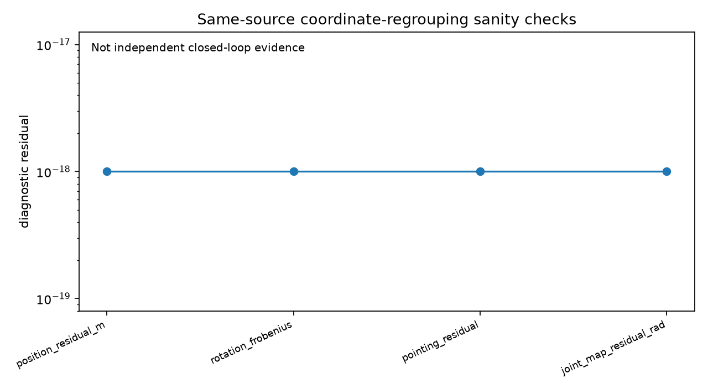
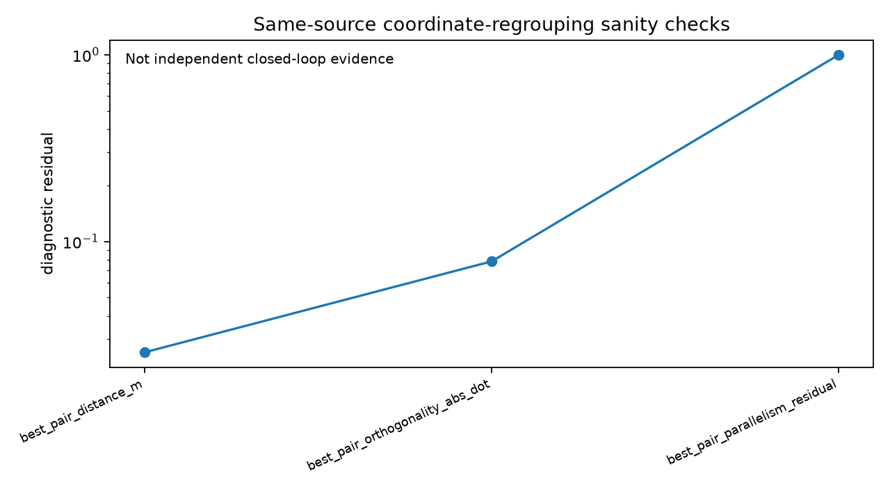
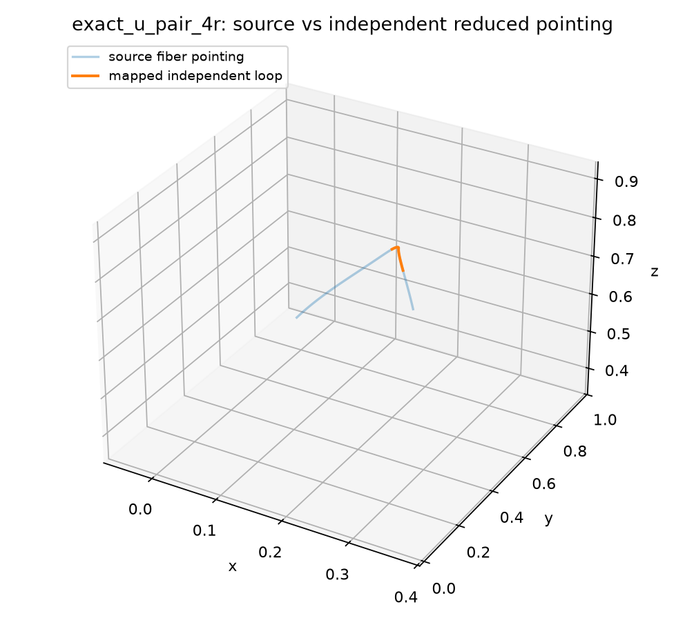

exact_u_pair_4r retains axis_aggregation_status=EXACT_GLOBAL, while the independent S_v-U_phys-R-R comparison is LOCAL_ONLY. The current source branch is budget-limited and complete bidirectional component correspondence has not been established.| Source | Axis aggregation | Closed mechanism | Overall | Topology | Roles | Source motion |
|---|---|---|---|---|---|---|
exact_u_pair_4r | EXACT_GLOBAL | LOCAL_ONLY | LOCAL_ONLY | S_v-U_phys-R-R | S_v,U_phys,R_phys,R_phys | NONTRIVIAL_POINTING_CURVE |
generic_4r | REJECTED | UNRESOLVED | REJECTED | none | — | NONTRIVIAL_POINTING_CURVE |




Y1 ⊂ SO(3) task with full orientation error.